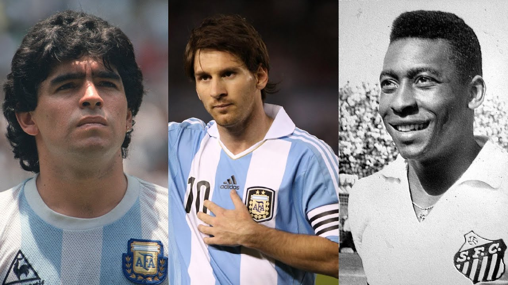

🌟 Estrellas del Fútbol
Jugadores legendarios y su camino al éxito
El fútbol ha dado al mundo jugadores legendarios que han marcado generaciones. A través de disciplina, talento y estrategias personales, muchos de ellos han dejado una huella imborrable en la historia del deporte.
Jugadores destacados
Lionel Messi
Perseverancia, entrenamiento técnico y una visión única del campo. Formado en La Masía del FC Barcelona.
Cristiano Ronaldo
Trabajo físico intensivo, mentalidad competitiva y liderazgo. Siempre enfocado en la mejora continua.
Pelé
Talento natural y amor por el juego. Debutó a los 15 años y deslumbró al mundo con su estilo alegre y ofensivo.
Diego Maradona
Creatividad, astucia y control del balón. Una leyenda por su desempeño en el Mundial de 1986.
Zinedine Zidane
Elegancia, inteligencia táctica y control del ritmo del juego, tanto como jugador como entrenador.

Estrategias comunes hacia el éxito
| Estrategia | Aplicación |
|---|---|
| Entrenamiento diario | Todos los jugadores exitosos entrenan constantemente, incluso fuera de temporada. |
| Disciplina mental | La concentración y la resiliencia son claves para manejar la presión y los fracasos. |
| Alimentación y descanso | Cuidan su cuerpo al máximo con dietas estrictas y rutinas de sueño. |
| Adaptabilidad táctica | Se adaptan a distintas posiciones, equipos y estilos de juego según el momento. |
Impacto en el fútbol y la sociedad
Estos jugadores no solo han brillado en el campo, sino que han influido en millones de personas alrededor del mundo. A través de campañas benéficas, academias de fútbol y presencia en medios, se han convertido en modelos a seguir dentro y fuera del deporte.
Actualmente, muchos de ellos participan en proyectos sociales, promueven la inclusión en el deporte y apoyan el desarrollo de jóvenes talentos a nivel global.